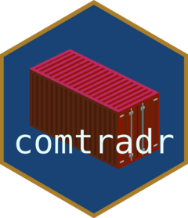

Get (estimated) trade matrix data from the UN Comtrade API
Source:R/ct_get_trade_matrix.R
ct_get_trade_matrix.RdThis function queries the Trade Matrix endpoint of the UN Comtrade API,
an analytical dataset maintained by the UN Statistics Division (UNSD).
In contrast to
ct_get_data(), which returns only what countries have reported, the
trade matrix complements reported figures with UNSD estimates, so that
the resulting reporter x partner matrix covers world trade completely.
![[Experimental]](figures/lifecycle-experimental.svg)
Commodities are classified by SITC (classification_code is "SS", the
combined SITC used across revisions). The endpoint provides annual data
for trade in goods only.
Usage
ct_get_trade_matrix(
commodity_code = "TOTAL",
flow_direction = c("import", "export"),
reporter = "everything",
partner = "everything",
start_date = NULL,
end_date = NULL,
include_world = FALSE,
process = TRUE,
tidy_cols = TRUE,
verbose = FALSE,
primary_token = get_primary_comtrade_key(),
update = FALSE,
requests_per_second = 10/60,
extra_params = NULL,
cache = FALSE
)Arguments
- commodity_code
SITC commodity code(s). Accepts
"TOTAL", one-, two- and three-digit SITC codes, the five four-/five-digit codes the UN estimates in addition ("7812","7841","7851","7852","78531"), and the level selectors"ag1"to"ag5", which return every code at that number of digits.everythingis a synonym for"ag1"(all ten one-digit sections). Use"all_levels"to request the entire hierarchy at once — note that levels are nested, so such a result must not be summed. Default:'TOTAL'.- flow_direction
The direction of trade flows:
'import','export'oreverythingfor both. These are the only flows the trade matrix carries. Implemented case-insensitively, so'import'and'Import'are equivalent. Default: c('import','export').- reporter
Reporter ISO3 code(s),
everythingorall_countries. Seecomtradr::country_codesorcomtradr::ct_get_ref_table('reporter')for possible values.everything(the default) returns the complete trade matrix including estimates for non-reporting countries.- partner
Partner ISO3 code(s),
everythingorall_countries. Seecomtradr::country_codesfor possible values. Default: 'everything'.- start_date
The start date of the query. The trade matrix endpoint only provides annual data, so this must be a plain year (
yyyy).- end_date
The end date of the query. Must be a plain year (
yyyy). The API accepts at most 12 periods per query, soend_datemay be at most 11 years afterstart_date.- include_world
Keep the aggregate World rows (reporter or partner code
0)? These are the margins and grand total of the matrix and must not be summed together with the bilateral rows. Default:FALSE. One exception: if you ask forpartner = "World"explicitly, that margin is what you requested and is kept, while the reporter margin and grand total are still dropped.- process
If TRUE, returns a data.frame with results. If FALSE, returns the raw httr2 request. Default: TRUE.
- tidy_cols
If TRUE, returns tidy column names. If FALSE, returns raw column names. Default: TRUE.
- verbose
If TRUE, sends status updates to the console. If FALSE, runs functions quietly. Default: FALSE.
- primary_token
Your primary UN Comtrade API token. Default: stored token from
comtradr::set_primary_comtrade_key.- update
If TRUE, downloads possibly updated reference tables from the UN. Default: FALSE.
- requests_per_second
Rate of requests per second executed, usually specified as a fraction, e.g. 10/60 for 10 requests per minute, see
req_throttle()for details.- extra_params
Additional parameters to the API, passed as query parameters without checking. Please provide a named list to this parameter. Default: NULL.
- cache
A logical value to determine, whether requests should be cached or not. If set to True,
tools::R_user_dir(which = 'cache')is used to determine the location of the cache. Use the .Renviron file to set the R_USER_CACHE_DIR in order to change this location. Default: False.
Details
World rows and double counting
The endpoint returns aggregate "World" rows (reporter code 0 and/or
partner code 0, ISO W00) interleaved with bilateral flows. These are
row and column margins of the matrix, plus a grand total. On a full
query the bilateral rows, the reporter margins, the partner margins and
the grand total each sum to the same world total, so summing the raw
response over-counts fourfold.
By default include_world = FALSE drops these rows, so the result is
safe to aggregate. Set include_world = TRUE to obtain the margins and
the grand total, but do not then sum across the whole frame.
Note that is_aggregate does not identify these rows: the trade
matrix endpoint leaves that column unpopulated (FALSE on every row,
including World rows). It cannot be used to filter aggregates here.
What is_reported means
is_reported is a per-cell provenance flag, not a statement about
whether a country reported:
TRUE— the value is the reporting country's own figure.FALSE— the cell was produced or adjusted by the UNSD estimation pipeline: extrapolation from a nearby reported year, mirror inversion from partner data, manual adjustment of under-reported or confidential trade, or redistribution of non-specified partners.
A country that reports fully can still have many FALSE cells, and a
FALSE value often agrees with the reported figure to within rounding —
the flag marks passage through the estimation pipeline, not necessarily a
changed number. Commodity aggregates inherit FALSE if any constituent
detail cell was estimated, so a TOTAL row is flagged FALSE whenever
any underlying section was.
A reporter with no TRUE cell anywhere is one whose figures here are
entirely estimated. To find them, group by reporter and test whether any
row is TRUE, rather than reading the flag row by row. Note this is not
quite the same as "did not report": a country can file with Comtrade and
still be estimated throughout this matrix, so check individual cases
against ct_get_data() when it matters.
Values
Only primary_value is populated, in current US dollars, following the
usual Comtrade convention (CIF-type for imports, FOB-type for exports).
cifvalue, fobvalue, qty and net_wgt are always NA: the
estimation is applied to trade value only, and quantity information is
removed from the source data.
References
UN Statistics Division, "Note on the Trade Estimation" (2026 update): https://uncomtrade.org/wp-content/uploads/2026/04/Note-on-Trade-Estimation-26-July-2010-2026-Edit-Public.pdf
Product overview, "Trade Matrix - IMTS Analytical Data": https://uncomtrade.org/docs/trade-matrix/
Cite the data source as "UN Comtrade".
See also
ct_get_data() for the standard trade data endpoint, which
returns only reported (non-estimated) values. The two are not
interchangeable: figures from the trade matrix should not be presented
as reported statistics.